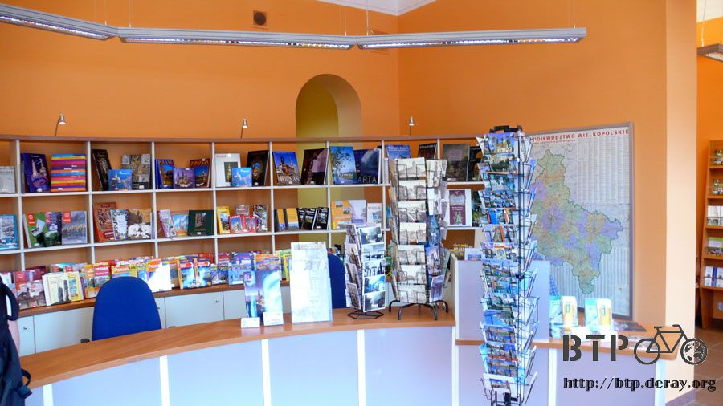
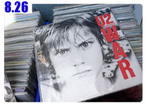

舊城～昔日的光彩不曾黯淡
柔軟的床鋪又登場了，在露營和舒適的場所間交替著切換，離開莫斯科的MSI宿舍，又是連續七天的露營，直到邊境。
在邊境終於能住宿一晚洗滌髒污和恢復精神，進入波蘭之後又是連續三天的露營。
躺在床上回想著露營過的場所，這陣子還真睡了不少地方，睡過最好的首推乾淨的空屋、最有趣的應該是麥田中央、最糟糕的就是半夜睡到一半會被趕走的情況。
剩下的路程大約還有兩千公里左右，十五天的時間就能夠輕鬆騎完，接下來只要注意安全，進入歐洲之後就算接近旅途的尾聲了。
若問我一個人旅行了一百多天是什麼感覺？
餐廳的阿姨跟路上遇到的大叔都是用『你瘋了嗎？』加上不可置信的表情來看待這趟旅行。
看著收割過的小麥田，一望無際，心裡想著就在這裡露營一夜吧，同時又想著我自己是不是瘋了？
跟喝醉酒的白俄羅斯人喝酒、吃鳥飼料，語言不通也能哈拉聊天，同時又想著我自己是不是瘋了？
露營半夜冷得全身在發抖，摩擦手臂取暖，摸到的全是雞皮疙瘩，同時又想著我自己是不是瘋了？
當然～無庸置疑的，我是瘋了。
在四十幾度的高溫下看著紅色大地的戈壁灘、在哈薩克騎一整天全部都是荒原、在俄羅斯連夏天也冷得要命鼻水直流，
這趟路不帶著一點瘋狂的心，很多地方要怎麼跨過去，我自己也不知道。
生命進行的方式有很多種，我不會去評論別人過得怎麼樣，因為這是每個願意對自己人生負責的人，所選擇的生活方式。
反過來說，喜歡評論我的人倒是不少，將一些自以為對的觀念、限制、教條、想法拘束在我身上。
很抱歉的，我只能說不論你講的再有道理、甚至是鐵論，那又怎樣？
畢竟你永遠不會是我，也不可能了解我這麼做的動機和目的。
更重要的，我從來就不是活在別人的期望和讚美、指責與約束中過日子的人，你可以說我自以為是、也可以說我目中無人，但我不在乎別人怎麼看我。
我就是我自己，做自己想做的事，走自己想走的路，到自己想去的地方，過自己想過的生活。
洗過澡後平躺在床上，想著想著身體就陷入床鋪中，思緒則一直往下陷到夢的深淵～直到天亮。

早上小鵝開車載我去換點生活花費，茲羅提雖然只在波蘭通行，但卻是很好用的貨幣，換個一百美金在波茲南待上四天，外加出境之前的旅程應該是夠用的。

這一輛是小鵝的飛雅特，車身是綠色的，引擎蓋則是大紅色，某個下雪的冬天，小鵝的哥哥大猩猩開飛雅特去撞樹所留下的紀念。

修車廠的人不知道有沒有紅綠色盲，也不管顏色對不對，反正是國民車，能夠開就好了，所以就變成現在看的到樣子。
在波茲南要換錢地方很不好找，外頭掛的招牌是波蘭文，裡頭則是什麼貨幣都能夠兌換成茲羅提，主要還是東歐其它沒有加入歐盟的小國為主。
一百美金用1:2.9的比例換成茲羅提，鈔票上都是國王的老K臉，硬幣則是很漂亮的金色，看起來像金幣一樣，令人捨不得花。
進入波蘭的時候在商店換美金，居然是1:2.2的坑人匯率，不過既然是在商店兌換，被坑也是沒辦法的，只好摸摸鼻子吃悶虧。
搭小鵝的車往宿舍的方向前進，路中央種了許多紅色和黃色的花，現在開得很漂亮，但是一到冬天的時候，大雪降下來，零下十幾度的低溫全部都會凍死。
等大地回春之後，波茲南的市政府就將枯死的花全部挖掉然後重新種植一次，為了市容的美麗，每年就這麼樣的循環進行。
波茲南的某個街道，左邊那個SPHINX就是昨天吃晚餐的地方，辣妹隨處可見，冬天就包得密不通風了。
波蘭人很守法，路上開的汽車地位是最小的，行人優先、再來是電車跟公車優先，最後才是汽車。
汽車在路上跑的時候，所有的交通號誌都必須遵守，包含紅綠燈、左右轉的告示牌，在街上完全聽不到喇叭的聲響。
除了開車之外，連停車也是很有規範，告示牌會在底下劃出這一區該怎麼停車，停直的還是橫的，是全部停在裡面還是一半要跨在馬路上，細節一點也不馬虎。
照片右邊的標示是說這邊要全部停在馬路(灰色線)內側，並且要停斜的，同時這邊是免費停車場。
這是波茲南的貿易展覽中心，這裡只是入口而已，裡面佔地超廣，有好幾棟獨立的展覽館，光是這個大門的規模就已經很驚人了。
回宿舍之前先吃一頓當地的傳統早餐，這些紫色的甜菜根和醃蔬菜是一定不可少的基本菜色。
這些則是波蘭傳統的甜麵包，外觀會用巧克力或是糖漿包覆，配上鬆軟的麵包，內餡還會有果醬或是奶油等，口味很棒，價錢更是便宜。
這個則是波蘭人傳統的咖啡，不是用咖啡機煮出來的味道，而是將咖啡磨成粉，然後淋上熱水也不攪拌就端給客人。
要喝之前必須很仔細的均勻攪拌過，然後等上幾分鐘讓咖啡粉溶化，喝起來跟一般的咖啡味道很不一樣。
喝完之後，其實不可能喝完，因為杯底一定會留下一大堆的咖啡渣還沒溶解，
早餐就點一些簡單的炸薯條、炒蛋配香腸切片這些好吃又簡單的食物，配上大塊的麵包，連午餐都一併解決掉。

波茲南的地圖，這一張貼在牆上帶不走，但之後就拿到了自己的一份專屬地圖，連外圍郊區包含在內，波茲南是一個很大的城市。
早上在小鵝房間裡使用快速的學術網路，住的地方網路有點問題沒辦法連上線，接下來幾天都要到小鵝這裡報到才行。
下午的時候到舊城去閒晃，那邊是波茲南最古老也是最熱鬧的市中心。
現在才八月下旬，路上的行道樹已經漸漸轉成秋天的顏色。
在冬天的時候，波茲南早上八點半才天亮，下午四點就天黑了，那時候所看到的景色跟現在是完全不一樣的畫面。
有點年代的建築物大多是用紅色磚頭配上紅色瓦片所蓋成的房子，從外觀很難猜出建築物的用處。
比如這一棟紅色的建築群，這可是全歐洲最大的婦產科醫院，每年接生超過六千位小嬰兒。
波茲南除了是大學城之外，也是波蘭最具規模的醫學中心，學術上的地位很重要。
另一個街道，地上的鐵軌跟頭上的電線是給電車用的，斑馬線沒有設紅綠燈的話，行人永遠優先通行。
若有設紅綠燈也只需要按一下按鈕，沒幾秒鐘馬上就變成行人綠燈的燈號。
行駛中的車輛全天候二十四小時都要開燈，車速限制郊區只有七十公里，在市區內則更慢。
街邊的建築物每一棟都很有自己的特色，漂亮的陽台和雕刻隨處可見，光是漫步在街頭，不需要特定的目的地，就是很棒的城市觀光。
幸運的話還能看到打廣告的飛船從空中飛過，這年代還用飛船在打廣告的真是太罕見啦～
周末的天氣很好，星期四還下了豪雨，星期五則是陰天，老天爺很給面子，在我抵達波茲南的時候放晴，讓我飽覽最美麗的風光。
鋪設有鐵軌的路，汽車也是可以行駛，比較舊的街道地上不是柏油路，依然維持傳統的石頭鋪底的路面。
開車經過時整輛車顫抖個不停，講話的時候小心會咬到舌頭。
警察不會站得滿街都是，若是小違規，比如說騎自行車過斑馬線沒有下車用牽的，若是因為不知道這個規定而誤犯的話，警察會網開一面。
將車子停在國家博物館旁邊，這裡面不定期有一些展覽。
正門口旁邊的雕刻，很幸運這些美麗的藝術品可以躲過戰火的摧殘。
博物館側面牆壁上的馬賽克壁畫。
博物館背面的超大幅壁畫。
每一幅畫應該都是一個故事，有興趣的人可以自己去找資料補齊，有心的人若能夠親自走一趟波蘭，那收穫肯定更豐富。
這就是之前提過的，連可以踢球的區域都要用告示牌明顯的標示出來，大人的圖案則貼了好笑的大頭標示。
紅色磚頭背上鵝卵石的牆壁就是舊城牆，城牆內的範圍俗稱舊城，但是一點也不舊，裡面熱鬧、美麗、古典、風味。
舊城中心是一個正方型的廣場，車輛禁止進入，連自行車也不行。
辣妹隨處可見，連辣媽也很多，最少最罕見的就是觀光客，若將來你有機會到這裡一遊，很有可能你是整個廣場中唯一的觀光客。
辣妹的正面照片隨後補上。
廣場上有許多的露天餐廳，裝飾得各有特色，很多大學生都在這邊打工，說英文都可以溝通的。
像這樣的噴泉雕像在廣場上有四座或是更多，這一座拿著魚叉比較好猜，應該就是海神。
背後有一動綠色尖塔的建築物則是波蘭市政廳，位於整個廣場的中央。
其它的雕像，每一座都是栩栩如生，像是把人就這麼給凝結在時間的剎那間。
圍繞著廣場的房子蓋的都很有特色，外觀、顏色、樣式都不盡相同，五彩繽紛卻又不顯得突兀，廣場上設立的露天餐廳也不會破壞整體的美觀。
最高的那一棟就是市政廳，看起來很像教堂跟城堡的綜合體。
年代悠久的建築跟雕像隨處可見，大多都可以免費參觀，不怕給你看，只怕待的時間不夠長，沒有辦法全部看完。
廣場連外的道路，這裡是市中心的心臟地帶，整個波茲南都是以這邊為中心向外發展。
連洗手檯的問世年代看起來都比廣場上的大多數人要來得更早，壓一下旁邊的銅製開關，冰涼的水就會從怪物的口中流出來。
污水則往下水道流，這麼古典的城市不知道下水道的系統設計得怎麼樣？
賣明信片、國旗、風車、玩具、衣服、飾品的小販很少，只有兩三家而已，觀光客不多的另一個現象。
恐怖的天線寶寶，丁丁真是令人聞之喪膽的腦殘代表。
奇奇怪怪的塑膠玩具，之後去看過跳蚤市場才覺得這些東西一點也不奇怪，跟跳蚤市場賣的東西相比，再正常不過了。
底下這些明信片都是波茲南的景色，從照片上看起來每個地方都很漂亮，這幾天不知道有沒有機會全部都親自看過一次。
畫作區，都是真跡不是複印品，畫得好還是壞就見仁見智啦。
波茲南也有藝術學校，市中心不遠的地方就有一棟『應用藝術』的建築，所謂的『應用藝術』，大概就是除了欣賞之外，也能實際拿來使用的東西。
比如這個喇叭形的椅子，後面的建築物是樂器博物館。
應用藝術的另一個範例，廣場內的椅子都是奇形怪狀，看起來甚至不像椅子，但大家都坐得很開心。
走了半圈廣場就會看到市政廳大樓，壁面上都是美麗的畫作和雕刻。
馬車繞行著廣場而走，有種時光倒流回到中世紀的感覺。
市政廳前的噴水池，雕像變成石雕，這樣就不會生鏽變成深綠色。
波茲南的城市標誌是兩頭相撞的山羊，就像這個商店門口掛的圖案，以這個概念製作的雕像、圖騰，在城市的很多地方都可以看到。
這是一間餐廳的門口，紅色的乾燥花圈真是無比美麗，如同門口圖案上所畫的，這裡最拿手的是雉雞料理。
酒吧，波茲南的街道名稱都以對這座城市有貢獻的人物來命名，所以名字往往都很長，必須用縮寫才放得下。
某一棟書店之類的建築，這個人是波茲南市區的規劃者，很了不起的讓城市有如今的風貌。
底下的泥土板子寫著『STARY RYNEK』，意思就是『舊市集』，這個板子在廣場的四個角落都會看見，整個廣場所有的建築物也都是以這個名字來編號當作地址。
牆上的89/90意思是門牌編號，有些連瓦斯管線的來源都會標示在門口，這樣萬一出問題了，才知道該從哪一條管線下手修理。
另一條從廣場連外的馬路，車輛的勢力範圍就只到這裡為止了。
既然講到汽車，順便提一下波蘭人的駕駛，那些車頂掛著『L』的都是新手駕駛，就算他們開得再爛、犯錯或是讓後方大塞車，也不會有人鳴喇叭。
雖然掛一個那麼大的『L』在車頂感覺很俗，但所換來的卻是極度的禮讓。
這一個跟汽車也有關係，是停車繳費的機器。
當停在要付費的地段時就要投錢買票然後夾在車窗上，不然被巡邏的人看見可是會罰很重。
停車的價格依照地段而有不同，紅色最貴，綠色最便宜，相同的是停越久費用越高。
比如說停十分鐘要十元，若是連續停二十分鐘可能就要收三十元、連續停半小時甚至就變成一百元。
目的是讓駕駛不要長時間佔用停車位，甚至不要開車出來。
搭大眾運輸則是完全相反，使用越久、次數越多則越便宜，理由同上，請多利用大眾運輸。
走出小徑就會看見一整條的磚瓦城牆，至今依然保存完好。

這一片圍牆內就是應用藝術博物館，廣場上很多作品想必都是出自他們之手。
另外也有歷史學系，除了唸書之外還負責維護整座城市的教堂，不僅是學以致用，更能讓城市和人文相連在一起，不會隨著時間的軌跡而脫鉤。
這一輛也是飛雅特，不幸的是它因為違規而被鎖起來了。
違規的車輛警察就直接上鎖，駕駛可以從大大的車鎖上打電話給警察局，會有人來當場開罰單給你，並且要當場繳錢，才將車鎖給打開。
市區的路燈很多，一整區都是同樣的設計，入夜後昏黃的燈光讓城市增添不同的風貌。
比較大型的建築物，比如說是市政廳或是教堂、城堡這一類的，還會有專屬的夜間照明，入夜的城市治安也能令人放心。
自行車專用道的標示，騎在這樣凹凹凸凸的石頭路上，全身的骨頭都會震的酥麻喔。
在波茲南舊城的旅遊諮詢中心裡，小鵝幫我拿了一份波茲南的地圖跟主要景點介紹，之後我可以自己看地圖全市跑透透。


當然這些都是免費的資源～歐洲國家只要看到招牌寫著『i』都不要客氣，有問題儘管問，有資料儘管拿。
走路走累了就在廣場上吃東西休息片刻，露天餐廳的生意都很好，幾乎每一家都坐得滿滿的，裝飾也不馬虎，像坐在花園裡面的感覺。
現場演奏的樂隊，繞行著露天餐廳表演，悅耳的音樂流瀉在整個廣場，搭配著不時會響起的教堂鐘聲，視覺聽覺和味覺都是享受。
這一杯超迷你的咖啡只比大拇指還大一點而已，而且裡面只裝了三分之一左右，看起來像是被誰給喝過，其實這是標準尺寸的濃縮咖啡。
點咖啡才有附水，這邊的餐廳，應該說歐洲的餐廳，水都是要錢的，而且不見得比飲料便宜。
這個是我點的，超豪華水蜜桃聖代，上面還插兩根捲心酥。
吃完零食之後接著逛，窗口沒有加裝醜陋的鐵窗就不用多說了，美麗的紅花長滿了整座陽台真是超美麗的。
走離廣場區，某個地方會看到這個腳踏車的銅像，明信片跟旅遊指南都少不了他。

這個鼎鼎有名的銅像並不是真實的人物，而是很久以前，一個報紙上連載的故事中的主角，號稱是無人不知無人不曉。
說不定之前我在明斯克時，那個自行車老爺爺的雕像也有什麼典故呢？
補一張辣妹的照片，波蘭的女生號稱是全歐洲最美麗的，外觀美、身材好、個性佳，漂亮又活力十足，而且很親切。
在街上會看到很多女生頂著流行雜誌中的怪異髮型，身上穿著時裝展才會出現的奇特衣服，波蘭女生對於追流行的腳步一點也不慢。
這一路上看到太多辣妹了，讚嘆之餘根本就來不及拍，還是請對辣妹熱衷的男士自己走一趟坡茲南吧。
波茲南的街道，越看越有味道～
晚餐吃這一間餐廳，最有名的是沙拉，招牌中寫的是『綠色陽台』。
旅行期間要吃到蔬果很不容易，大多都是喝果汁，有看到蔬菜水果攤的時候才買一些來吃，之前小鵝帶朋友來吃這一間，
朋友的反映如下：『這裡根本就是在吃草呀。』所以請小鵝帶我來這邊好好的吃一頓草。
店裡懸掛很多隻小蜜蜂，每年掛的都不一樣，去年掛的是綿羊。
餐廳的氣氛很好，用餐的費用也不會貴到傻眼，以如此接近歐洲的生活水準但是消費只有歐洲的四分之一，將來我會計劃到波蘭自助旅行，好好遊歷一番。
桌上的燈飾就很漂亮，美食的味道也一直飄來，飢腸轆轆啦～快點拿菜單來點菜。
服務生是辣妹，同時也是小鵝的同學的女朋友，先被得手了實在太惋惜，這時候不論多好的朋友一律都改用禽獸來形容。
菜單是用筆寫的，滿滿厚厚一大本，我發覺不是俄文或是波蘭文看不懂的問題，我連英文菜單也是看得霧煞煞。
雖然物價比起歐洲來說便宜很多，但是波茲南的消費也是年年上漲，同樣的沙拉寫在最右邊的價目表，原本的23元已經塗改成25元，27元的也變成30元。
點完餐之後就等著美食上桌吧，飲料先來，加了很多西瓜球的冰紅茶，冰冰涼涼又可以吃到一粒一粒的西瓜，而且很大一杯，超值推薦。
跟小鵝兩個人合吃一份大盤的沙拉剛好，這邊大份的東西都大得很誇張，一個人能獨力吃完實在該給他鼓鼓掌。
一個人能獨力吃完實在該給他鼓鼓掌，裡頭有餐具、調味料、奶油、麵包和一瓶酸酸甜甜的沙拉醬。
美味的沙拉出現啦，實在太大盤而且底下的料很多，一張照片拍不下，只好連續謀殺只能看卻吃不到的各位，忍耐一點撐過這一段吧。
沙拉最上面是烤雞胸肉、底下有很多的生菜、萵苣、像葡萄的水果、番茄、小黃瓜、很香的鬚鬚菜、杏子水果乾。
淋上加了蜂蜜的沙拉醬，什麼東西都夾上一點到盤子上，每一盤看起來都是色香味俱全的大餐，說這樣是吃草實在太看輕它了。
看完上面的美食，如果剛好肚子餓的人應該已經叫救命的跑開了。
吃完豐盛的晚餐，回去的路上看見這個廣告，MUCHA是一位很有名的畫家，波希米亞人，出生於捷克，他的畫風如海報那一張一樣。
畫中人物的臉與肌膚是理想化的寫實風格，而衣裳與背景則是用華麗的曲線造形（花草圖案）來裝飾。
在波茲南的這段時間正好是他的畫展，這幾天會找時間去欣賞，老是吃美食有點缺少藝術細胞。
回宿舍之前爬到這所大學最舊也是最高的學生宿舍頂端去，二、三十年前就有辦法蓋出這麼高的建築物，外觀很像監獄也帶著粗獷的雕刻感。
宿舍很舊，裡面的設備、電梯都是古老的東西，電梯門就像一般的門那樣是用喇叭鎖，開門方式也跟一般的門一樣是向外拉開的，從外觀看不出這些是電梯。
宿舍內的建築稍嫌老舊，房間內則不清楚，但年代這麼悠久了，想必住在裡面很有『味道』。
從這一棟宿舍的最頂端眺望波茲南，這座城市的綠意規劃實在相當驚人，除了紅色的屋頂之外其它幾乎都是被綠樹給圍繞。
今天只是坡茲南觀光的第一天，在這座城市可以待上好一段時間～一點也不急著離開 :D
繼續閱讀：8.26 什麼都不奇怪

波蘭-茲羅提－ 1：12 台幣
8.25 |
總計：0元 |
出外靠朋友 |
|